Moje wspomnienia / retro komputer
Commodore.
To były piękne czasy...
To były piękne czasy...
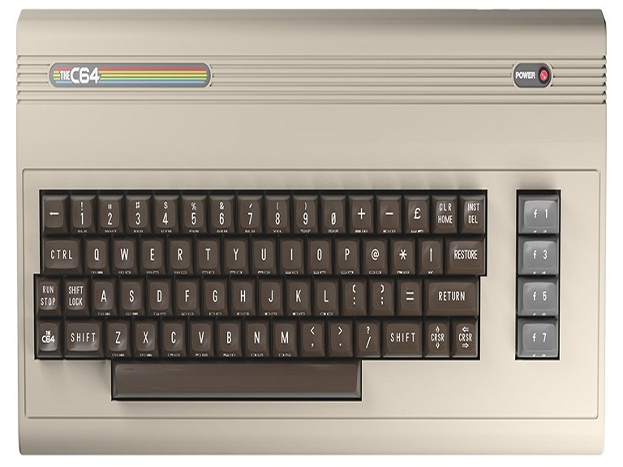
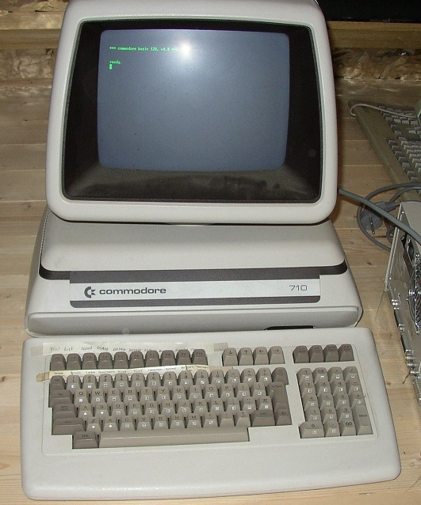
Gry Commodore
Kliknij miniaturkę, aby zobaczyć większy obraz.
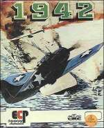
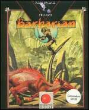
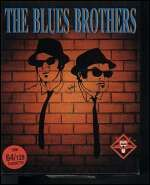
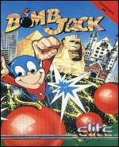
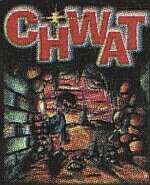
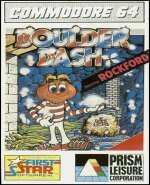
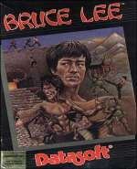
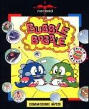
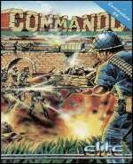
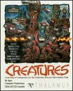
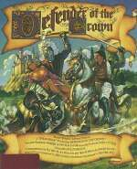
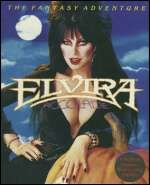
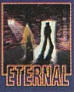
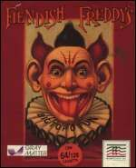
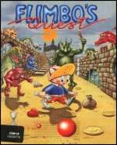
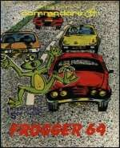
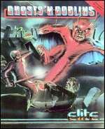
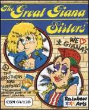
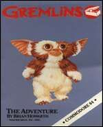
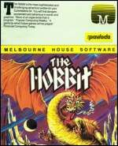
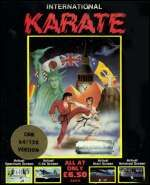
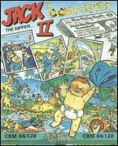
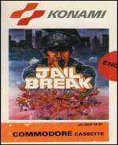
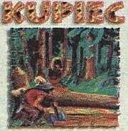
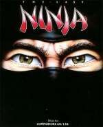
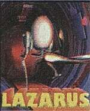
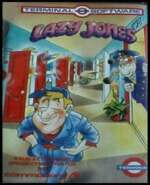
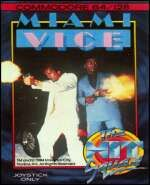
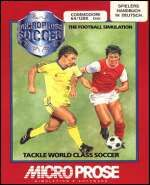
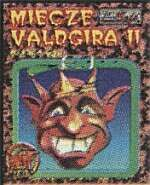
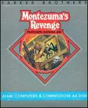
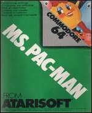
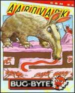
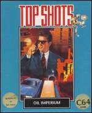
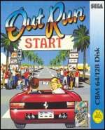
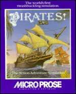
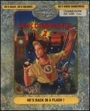
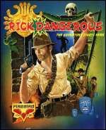
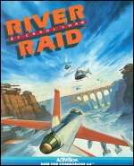
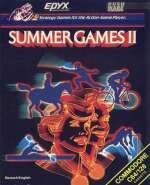
Niestety czasy te bezpowrotnie minęły. Dzisiejszym 50-latkom mogę jedynie polecić marną namiastkę, która tylko w niewielki sposób odzwierciedli tamte wspaniałe czasy. Kilkanaście emulatorów pod różne systemy operacyjne, na których można odpalić programy edukacyjne, demonstracyjne, narzędziowe, gry. Są tu również różnego rodzaju konwersje i muzyka.
Przewodnik: sprzęt, gry i emulacja
Commodore 64: dlaczego stał się legendą?
Commodore 64 trafił na rynek w 1982 roku. Jego nazwa nawiązuje do 64 KB pamięci RAM. Rozpoznawalny charakter gier tworzyły m.in. układ graficzny VIC-II i dźwiękowy SID. W praktyce oznaczało to płynne animacje, charakterystyczne brzmienia i możliwości, które twórcy gier oraz dem wykorzystywali na wiele sposobów.
Nie należy mylić Commodore 64 z Commodore 128 ani z rodziną Amiga. To różne platformy, a zgodność oprogramowania zależy od konkretnego modelu i trybu pracy.
Pierwsze uruchomienie C64 w emulatorze
- Pobierz emulator ze strony projektu VICE, który obsługuje m.in. Commodore 64.
- Wybierz model C64 i odpowiedni standard obrazu, jeśli wymaga tego gra.
- Otwórz legalnie pozyskany obraz programu, np. D64 (dyskietka), T64 (archiwum taśmy) lub PRG (program).
- Skonfiguruj joystick: w wielu klasycznych grach używany jest port 2.
- Jeśli gra nie działa, sprawdź, czy nie wymaga określonego modelu, dodatkowego napędu albo innego sposobu ładowania.
Sam emulator jest narzędziem. Prawa do konkretnych gier, obrazów dyskietek i oprogramowania systemowego należy rozpatrywać oddzielnie.
Co porównać w grach z epoki?
Wybierz jeden tytuł dostępny na kilku komputerach, np. Bruce Lee lub International Karate, i porównaj trzy elementy: sterowanie, oprawę dźwiękową oraz sposób przewijania ekranu. Takie zestawienie pokazuje, dlaczego wspomnienia z tej samej gry mogą być zupełnie różne u użytkowników Atari, Spectrum i Commodore.
Materiały: C64-Wiki i oficjalna dokumentacja VICE.